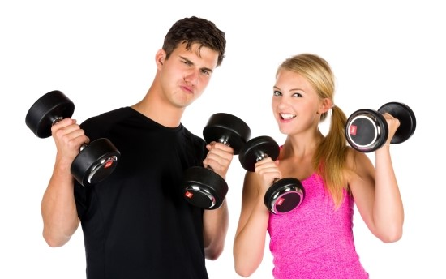
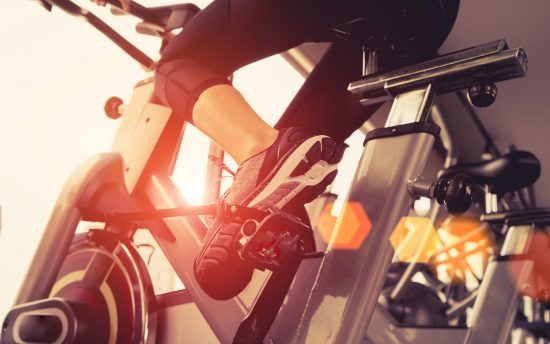

Men's movement? Women's movement?
결론적으로 여자와 남자의 운동차이는 없다!
그러나 필라테스,요가 등의 여성의 운동처럼 소개되는 이유는 상업적인이유가 매우크다.
대부분의 여자분들이 가장 많이 착각하는 것이 "여자가 근력 운동을 하면 몸이 울퉁불퉁해지고,
우락부락 해진다는 것이다. 그것은 아래와 같은 외국 여자 사진때문에 생긴 오해이다.
주로 아래와 같은 남성호르몬제를 맞은 여성 보디빌더들이 이런 몸을 보고 그런 착각들을
하는데. 즉, 별다른 호르몬제 없이 열심히 운동한다면 소위 발하는 애플힙을 가질 가능성
있게 된다.


그렇다고 하더라도 남성,여성 완전히 같은방식으로 운동을 할 수 는 없다.몇가지 미미한차이가 존재하는데 아래설명하겠다.
1.같은 조건이면 여성이 기구 근력운동에 더 많은 시간을 투자하는 게 낫다.
여성이 유산소운동으로 얻을 수 있는 심폐기능향상효과는 남성과 큰 차이가 없다.외려 같은조건이면
여성이 더 우월한 경우도 있다.그래서 유산소,고반복의 지구력훈련은 남성보다 많이한다고하여
큰 이득을 얻을 것도 없다.그에 비해 여성의 근육량 발달은 남성에비해 훨씬 더디다.
그러므로 당연히 근력훈련이 여성에게 더 우선이 되어야한다.
2.남성은 피로에약하고,여성은 중량에 약하다.
남성과 여성의 근력운동프로그램을 짤 때 가장 중요한 요소는 지구력과 회복능력이다.
같은조건에서의 남성과 여성중 여성의중량이 더낮게나오는건 사실이다. 하지만
같이 푸시업을 10회간신히 실행하고 1분휴식 후, 다시실행하였을때 남성은 처음횟수보다
힘들거나 줄어들지만,여성의 경우 같은강도의 푸시업이 실행되거나 혹은 더 많이 실행할 수도 있다.
이러한 차이는 근신경이 중량을 동원하는 능력의 차이인데,남성은 실제로 첫세트때 근육의 힘을 다써버
리는 반면 여성은 자신의 능력을 실제보다 과소평가했을 공산이 크다는 것이다.
결과로는 여성의 운동프로그램에서는 중량의 변화가없고 휴식시간을 줄여나가는 스트레이트방식이 좋을것이다.
출처:유튜브(채널-리프팅스쿼드)